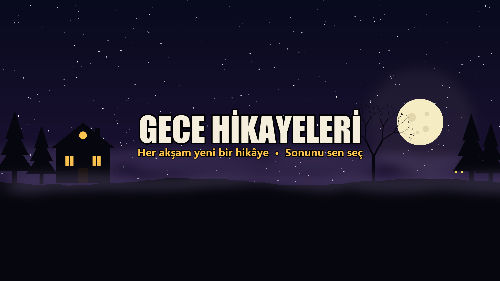

Gece Hikayeleri
Gece Hikayeleri, her akşam 1 dakikalık yeni bir korku ve gizem hikâyesi yayınlayan bir YouTube Shorts kanalıdır. Her bölümün sonunda izleyiciler yorumlarda A ya da B seçeneğine oy verir; en çok oy alan seçenekle hikâye devam eder.
Korku Shorts uygulaması
"Korku Shorts", kanal sahibinin kendi bölümlerini kendi YouTube kanalına otomatik yüklemek ve bölümlerin altındaki herkese açık yorumlardaki oyları saymak için kullandığı kişisel bir araçtır. Başka kullanıcılara hizmet vermez.